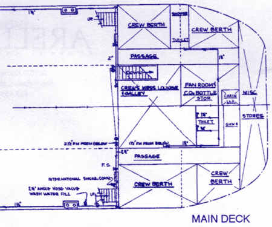

Blueprints of the Transquest

Specifications


Forward section of the main deck

Stern section of the main deck

Forward section of the tank deck

Aft section of Machine Room

Forward section of the Machine Room

Back to the Transquest Home Page
Web site developed by Sarah Rodger, Transquest Crew